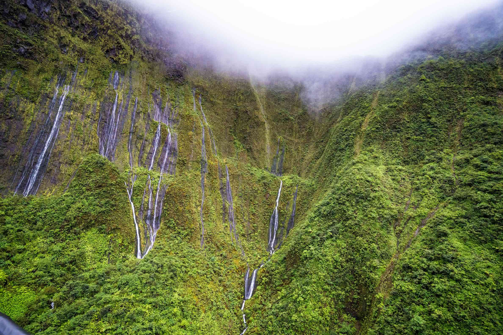
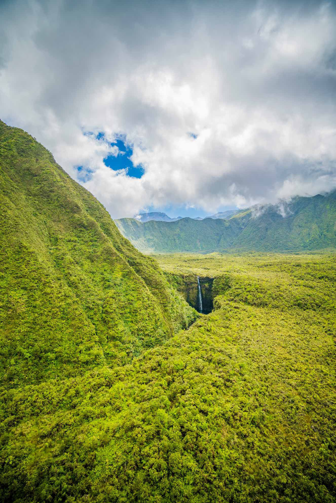
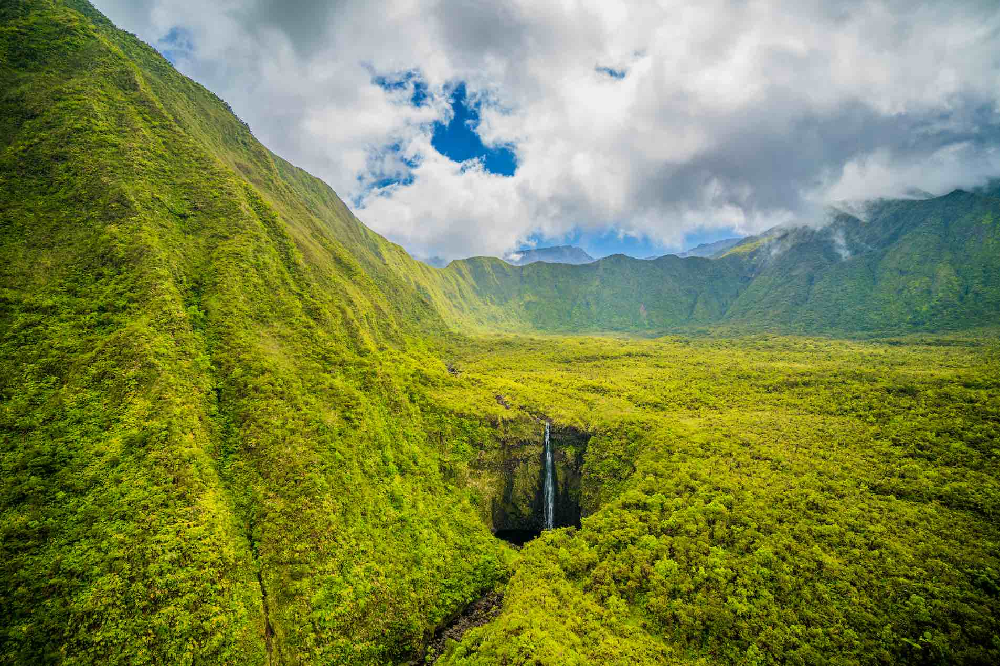
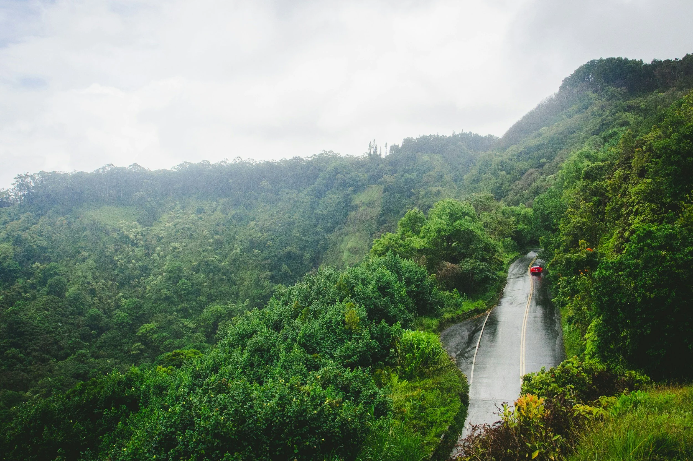

The Road to Hāna: What to Know Before You Go
Embarking on the Road to Hana is not just a drive; it's an odyssey through lush landscapes, cascading waterfalls, and the vibrant heart of Maui.
The road rewards patience: leave early, travel lightly and let the landscape set the pace.

An Odyssey Through the Heart of Maui
This iconic journey, often dubbed the "Divine Drive," offers a tapestry of beauty intertwined with challenges. Join us as we explore the risks and rewards of this unforgettable road trip.
Stretching for approximately 64 miles, the Hana Highway, or simply the Road to Hana, winds its way along Maui's northeastern coastline. The journey takes you through rainforests, past dramatic sea cliffs, and over narrow bridges, showcasing the island's breathtaking natural beauty.

Rewards of Beauty
1. Waterfalls Galore:
As you navigate the serpentine road, be prepared to witness a myriad of waterfalls cascading down lush hillsides. From the famous Wailua Falls to the hidden gems like the Seven Sacred Pools at Ohe'o Gulch, each waterfall adds a touch of magic to the landscape.
2. Tropical Flora and Fauna:
The road is adorned with a rich tapestry of tropical plants, vibrant flowers, and towering bamboo forests. Botanical gardens like the Garden of Eden offer a chance to stroll amidst exotic flora and discover the diverse ecosystem that makes Maui so unique.
Breathtaking Views & Cultural Stops
3. Breathtaking Views:
The Road to Hana treats travelers to panoramic coastal views, volcanic landscapes, and vistas of the Pacific Ocean that will leave you breathless. Each turn reveals a new postcard-worthy scene, making it a photographer's paradise.
4. Cultural Stops:
Along the route, immerse yourself in the rich cultural history of Maui with stops at local landmarks, such as the Hana Lava Tube or the quaint Hasegawa General Store. Engaging with the local culture adds depth to the journey, making it more than just a scenic drive.

Understanding the Risks
1. Narrow and Winding Roads:
While the serpentine road offers stunning views, it comes with narrow stretches, hairpin turns, and single-lane bridges. Drivers should exercise caution and be prepared for slow-paced travel.
2. Weather Conditions:
The weather along the Road to Hana can be unpredictable. Rainfall is common, leading to slippery roads and reduced visibility. Flash floods are a potential risk, especially during the wetter months. It's essential to check weather conditions before embarking on the journey.
3. Limited Services & Time Constraints:
Once on the road, services become scarce with limited gas stations and minimal cell reception. Furthermore, the journey can take several hours, making planning ahead crucial.
An Unforgettable Adventure
The Road to Hana is more than a drive; it's an immersive experience that encapsulates the natural beauty and cultural richness of Maui. While it presents challenges, the rewards far outweigh the risks for those seeking an adventure that goes beyond the ordinary. So, buckle up, navigate with care, and let the Road to Hana unveil the enchanting wonders of the Valley Isle.
Make sure to book your family or romantic photoshoot before you embark on this long drive...
Capture your memories in Maui with Wailea Photo before setting out on your epic island adventure.
View Sessions & Pricing